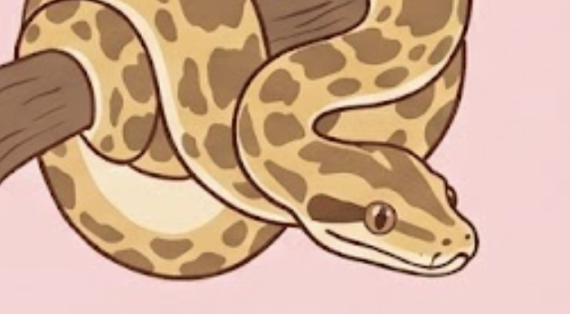
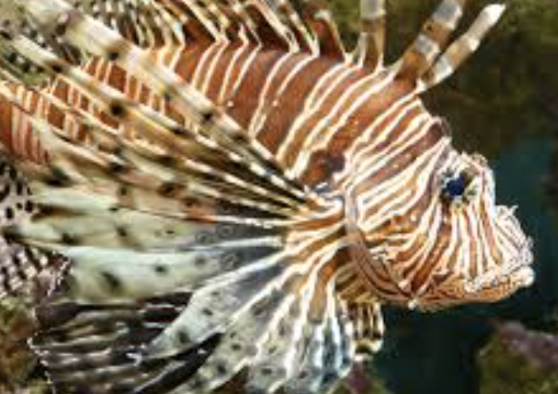
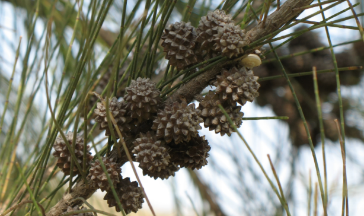

native to southeast asia, the burmese python was introduced to florida through the pet trade. it has become one of the most destructive invasive predators in the everglades.
studies have shown major declines in mammal populations such as raccoons, rabbits, and foxes due to python predation. with no natural predators, their population continues to grow rapidly.

lionfish are native to the indo-pacific but have spread throughout florida waters. they reproduce quickly and consume a wide range of native fish species.
their venomous spines protect them from predators, allowing them to dominate ecosystems and reduce biodiversity in coral reef environments.

this fast-growing tree was introduced for landscaping but has spread aggressively across florida. it forms dense root systems that block native plants from growing.
it also weakens soil stability and increases erosion, damaging wetland ecosystems and reducing habitat quality for native wildlife.